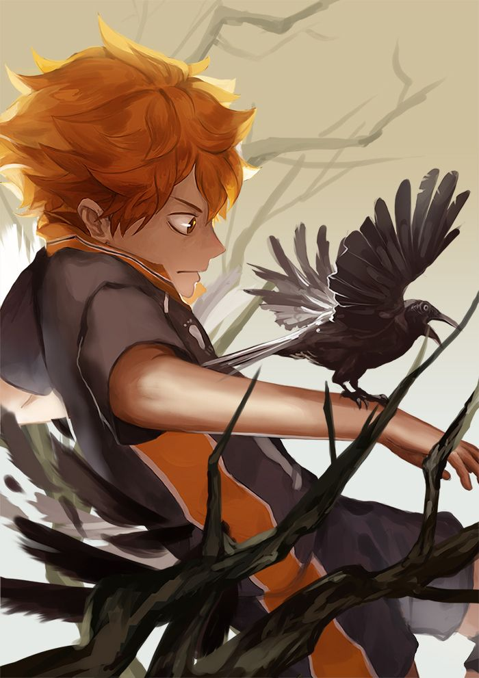
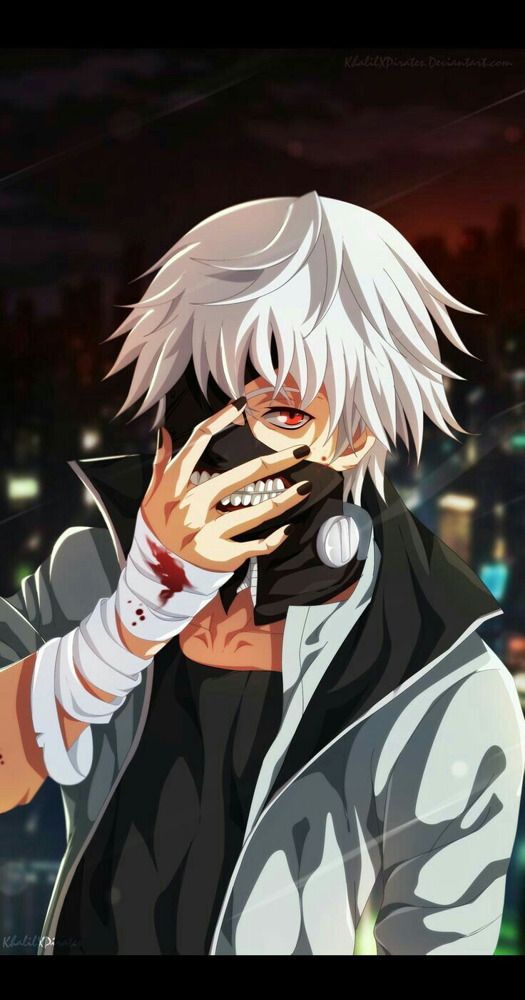

Uzumaki Naruto
Naruto reached that rare breed of shounen protagonist that actually gets to achieve their dreams, as he finally became the 7th Hokage of the Hidden Leaf Village, making readers and viewers who followed along the way feel like proud parents.

Shoyou Hinata
The Strongest/Ultimate Decoy!
One of the Karasuno volleyball team's middle blockers following which became a member of Japan's National team during the 2021 Olympics

Aoi Todo & Itadori
Aoi is an extremely eccentric individual who at first appears to be nothing more than a battle-crazed meathead to all his peers. He enjoys the thrill of battle. whereas Itadori really cares for his comrades whom he views as people with their own wills, despite how deep or shallow his connection to them is.

Kugasaki Nobara

Kaneki-Ken
Lesson and abilities in 3-4 lines

Itachi Uchiha

Killua Zoldyck
Killua is the most popular Hunter X Hunter character, according to the popularity polls.
His familiarity with electricity reflects the torture he endured at the hand of his own family.